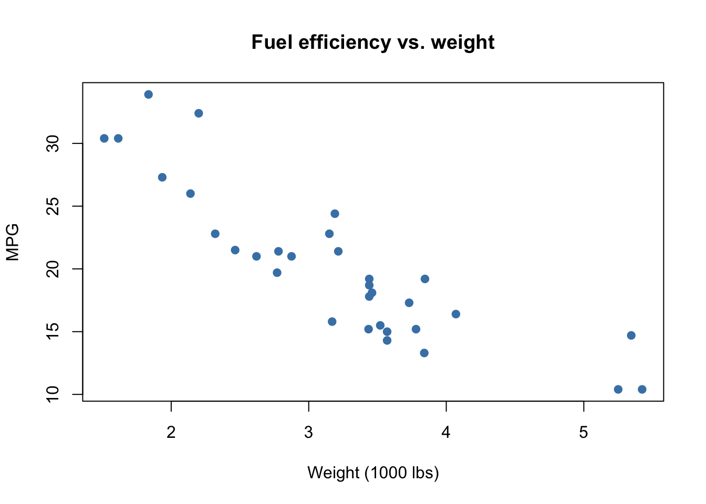
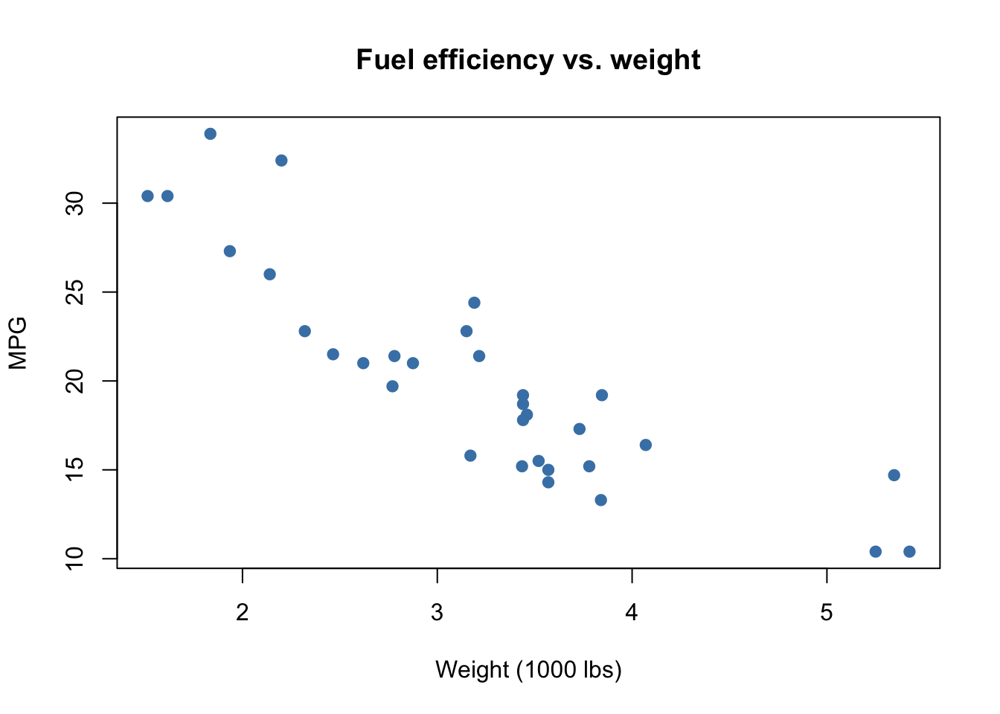
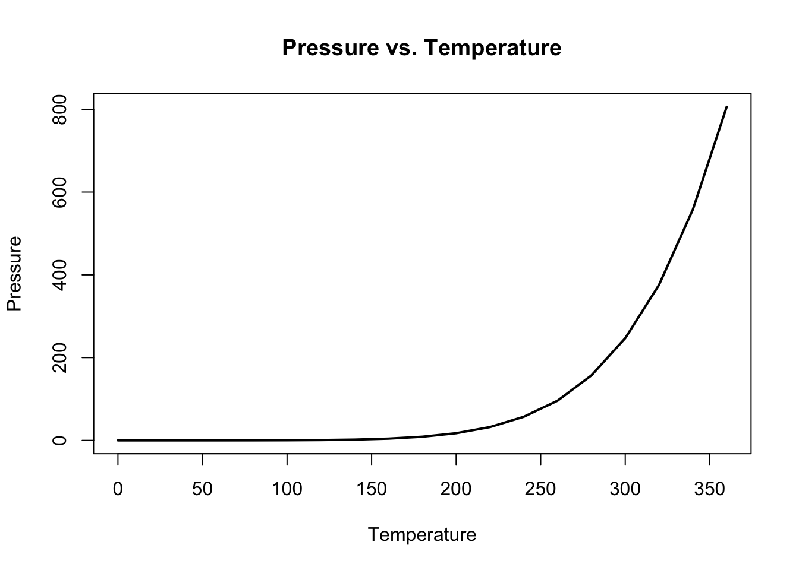
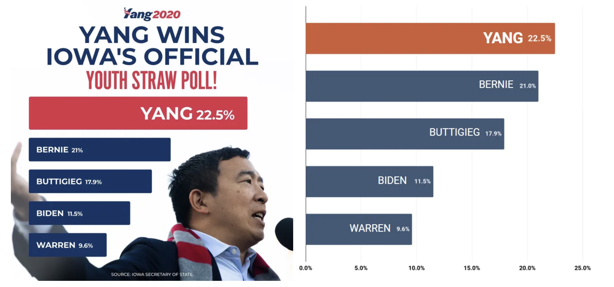

Code
## simple scatter using built-in `mtcars`
plot(mtcars$wt, mtcars$mpg,
main = "Fuel efficiency vs. weight",
xlab = "Weight (1000 lbs)", ylab = "MPG",
pch = 19, col = "steelblue")
Data visualization is one of the most powerful tools in the data scientist’s toolbox. Visuals allow us to quickly summarize complex data, spot trends and outliers, and communicate results to both technical and non-technical audiences. A good visualization can illuminate patterns that might remain hidden in tables or numerical summaries, while a poor visualization can obscure the truth or even mislead. In this chapter, we explore both base R graphics and the ggplot2 package, emphasizing good practices and illustrating common pitfalls. We will also critique real world examples of misleading charts and learn how to improve them.
plot()R has a built-in graphics system that allows us to create plots quickly. The plot() function is versatile: depending on the type of data it is given, it can produce scatterplots, line plots, or even factor-based displays. This makes plot() an excellent starting point for beginners.
Scatterplots display the relationship between two continuous variables. In the example below, we investigate how car weight relates to fuel efficiency using the built-in mtcars dataset.
## simple scatter using built-in `mtcars`
plot(mtcars$wt, mtcars$mpg,
main = "Fuel efficiency vs. weight",
xlab = "Weight (1000 lbs)", ylab = "MPG",
pch = 19, col = "steelblue")
When data are ordered, such as time series or physical measurements, line plots are appropriate. The following plot shows how pressure changes with temperature.
## line plot via type='l'
plot(pressure$temperature, pressure$pressure,
type = "l", lwd = 2,
main = "Pressure vs. Temperature",
xlab = "Temperature", ylab = "Pressure")
Tip. Use options like pch, col, cex, and type to control appearance in base graphics. These adjustments can make exploratory plots more readable and more informative.
Base R graphics are quick and convenient, but they can be inconsistent and limited when creating complex or publication-quality graphics. This motivates the use of a more systematic framework.
Although base R allows us to make plots quickly, its commands are not always consistent, and combining multiple layers can be challenging. This is where the Grammar of Graphics comes in. The grammar provides a consistent, layered approach: we specify the data, the aesthetic mappings, and the geometric objects (geoms) we want to draw. The ggplot2 package implements this grammar, making it possible to build complex visualizations piece by piece. This framework emphasizes transparency and reproducibility: a plot can be read almost like a sentence that describes how the data are visualized.
Visualizations can be abused to mislead. It is important to learn how to critically assess charts we see in the media. The following real-world examples show common problems and better alternatives.
The chart on the left (from television) uses a truncated y-axis, making the decline from 77% to 65% appear far more dramatic than it really is. The corrected version on the right starts the axis at zero, giving a more truthful impression of the decline.
The campaign graphic on the left highlights one candidate with a larger bar, but the scale and ordering are inconsistent. On the right, we recreate the same data as a standard horizontal bar chart. Ordering the bars and scaling them correctly provides a much clearer comparison of candidates.

The donut chart below attempts to show candidate support in a primary. Although colorful, donut (and pie) charts make it difficult to compare values precisely. A simple bar chart provides clearer comparisons across categories.

ggplot2 Basics and Your Original ChunksWe now shift to ggplot2, which implements the grammar of graphics in R. The syntax involves calling ggplot() with a dataset and aesthetic mappings (via aes()), then adding layers such as geom_point() or geom_line() with the + operator. Additional layers for smoothing, faceting, and themes give us rich control over the appearance of plots.
Below we preserve all runnable/demo chunks from your original slides, now interwoven with explanations.
We begin by loading the tidyverse, which includes ggplot2, and looking at the mpg dataset.
library(tidyverse)
mpgHere, mpg is a data frame containing information on car models, including engine displacement, highway mileage, and class.
mpg <- mpg
glimpse(mpg)
View(mpg)
?mpgThe functions glimpse() and View() allow us to quickly inspect the structure of the dataset, while ?mpg shows documentation.
Before plotting, we might check available geoms:
?ggplot
?geom_point
?geom_lineWe can now create a basic scatterplot of engine displacement vs highway mileage.
mpg <- mpg
mpg |>
ggplot() +
geom_point(aes(displ, hwy))This produces a scatterplot with displ on the x-axis and hwy on the y-axis. Swapping the variables simply flips the axes:
mpg |>
ggplot() +
geom_point(aes(hwy, displ))We can add additional layers. For example, combining points with a line layer:
mpg %>%
ggplot() +
geom_point(aes(displ, hwy)) +
geom_line(aes(displ, hwy), color = "tomato")Color can highlight categories such as car class:
mpg %>%
ggplot() +
geom_point(aes(displ, hwy, color = class))A smoothing curve helps reveal overall trends.
mpg %>%
ggplot() +
geom_point(aes(displ, hwy, color = class)) +
geom_smooth(aes(displ, hwy))Themes can alter the look of the plot:
mpg %>%
ggplot() +
geom_point(aes(displ, hwy, color = class)) +
geom_smooth(aes(displ, hwy)) +
theme_bw()We can set fixed aesthetics outside aes():
mpg %>%
ggplot(aes(displ, hwy)) +
geom_point(color = "steelblue", size = 3)Transparency can improve clarity:
mpg %>%
ggplot(aes(displ, hwy, color = class)) +
geom_point(size = 2, alpha = 0.8)We can fit smoothers with different methods:
mpg %>%
ggplot(aes(displ, hwy)) +
geom_point(aes(color = class)) +
geom_smooth(se = FALSE)mpg %>%
ggplot(aes(displ, hwy)) +
geom_point(aes(color = class)) +
geom_smooth(method = "lm", se = FALSE)mpg %>%
ggplot(aes(displ, hwy, color = class)) +
geom_point(size = 2) +
labs(
title = "Fuel efficiency vs. engine displacement",
x = "Engine displacement (liters)",
y = "Highway MPG"
) +
theme_minimal()We can split data into subplots by categories.
mpg %>%
ggplot(aes(displ, hwy, color = class)) +
geom_point(size = 2) +
facet_wrap(~ class)mpg %>%
ggplot(aes(displ, hwy)) +
geom_point() +
facet_grid(drv ~ cyl)Bar charts summarize categorical data:
mpg %>%
ggplot(aes(class)) +
geom_bar()Histograms show distributions:
mpg %>%
ggplot(aes(hwy)) +
geom_histogram(bins = 20)Density plots are another way to display distributions:
mpg %>%
ggplot(aes(hwy)) +
geom_density()We have explored both base R plotting and the ggplot2 grammar of graphics. Base R offers quick and simple plotting functions, but lacks consistency for more advanced tasks. ggplot2 provides a flexible and layered system, allowing us to build complex visualizations step by step. By studying both good and bad visualizations, we learn not only how to make effective charts but also how to critically evaluate visuals we encounter in practice.